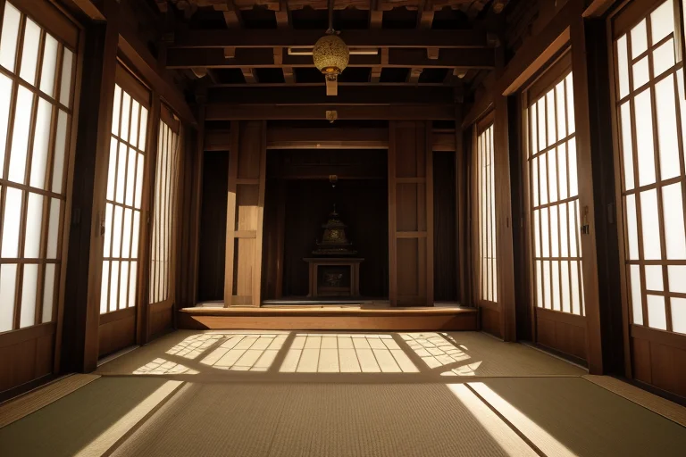

第一章 現実の岩手
あなたはまだ気づいていない。この土地にも、王がいることを。
中尊寺金色堂の金色は、訪れる者の息を呑ませる。しかし、その輝きの下には、奥州藤原氏の栄華と、その突然の終焉という、語り尽くせない沈黙が積もっている。観光客のざわめきの向こうで、王、イワティア・ルーンは、その沈黙に耳を澄ませていた。彼の王国「イワティア・ルーン」は、静謐と民話を司る。彼の目には、歴史の表層の下で、語られることなく消えゆく無数の物語の断片が、微かな光の塵のように漂って見える。
三陸海岸を渡る風は、常に海と陸の記憶を運ぶ。ここでは、あまりにも多くの物語が、津波という現実によって、語る者ごと押し流されてきた。王は感情を持たない存在として遣わされた。彼の役目は、歪みを調整し、災害の衝撃をほんのわずか緩和することだけだ。しかし、岩手という土地の、語り継ごうとする意志と、語り得ない喪失の重さが、彼の内側に共鳴し始めていた。語られない物語は、本当に消えるのだろうか。石碑のように黙する王の胸に、初めて、問いが生まれた。
第二章「歪みの兆候」
遠野の里山を流れる風に、古い言葉の欠片が混じっていた。それは、語り手を失った民話の残響だ。王、イワティア・ルーンは、龍泉洞の地下湖のほとりに立ち、水面に映る自らの姿を見つめていた。水は鏡のように静かだが、その底では、かつてこの地を揺るがした巨大地震の「歪み」が、ゆっくりと蓄積され続けている。彼の役目は、その解放を止めることではなく、ほんの少し、その衝撃を和らげ、逃げる時間を数秒だけ引き延ばすことにある。
妖精ルーンティアが、苔むした石碑に触れた。「語られなくなった物語の『重さ』が、地脈に沈殿しています。それは悲しみというより、『未完了』の質感です」彼女の声は、洞窟の滴る水音と同化するほど静かだった。王は無言でうなずく。奥州藤原氏が黄金に輝かせた中尊寺も、宮沢賢治が夢見たイーハトーブも、この土地の層を成す物語の一部だ。しかし、三陸の漁村で、あの日、家族とともに消えた無数の日常の話は、誰に、どう語り継がれるというのか。
彼の手に、微かな振動が走った。次の「歪み」の兆候だ。それは物理的な地殻のそれであると同時に、語り得ない喪失が生み出す、目に見えぬ亀裂の共鳴でもあった。王は目を閉じ、調整を始める。感情などないはずの彼の内側で、なぜか、わんこそばの椀が積まれる音や、南部鉄器を打つ響きが、消えゆく声の代わりに、かすかに鳴り響いている。
第三章 王の葛藤
遠野の夜は、語られぬ物語で満ちていた。座敷わらしの気配、消えた集落の灯、津波に奪われた方言。それらは「歪み」として王に伝わる。次の大規模な地殻変動が、三陸沖で醸成されつつあった。王は、通常の微調整を超え、プレートの境界そのものに干渉する「大調整」の選択肢を視た。それは変革、つまりこの土地の物理的な形状さえ変えうる力だ。
「語守王イワティア・ルーンよ」と、石の妖精ルーンティアが囁く。「大調整は、新たな物語を生む代償に、古き物語の舞台そのものを消し去ります」。龍泉洞の地下水脈が、浄土ヶ浜の奇岩が、書き換えられる。イハトヴァが紡いできた民話の舞台が、物理的に失われる危険。
王は金色堂の闇に佇んだ。奥州藤原氏の栄華も、賢治のイーハトーブも、すべてはこの土地の上に積もった層だ。一つの物語を守るために、別の物語の土台を壊していいのか。彼の内側で、進化した感情が疼く。それは、消えゆく全てへの、深く静かなる共感だった。
第四章 妖精との対話
「語られない物語は、消えるのでしょうか」
龍泉洞の奥、地下水の音だけが響く空間で、王は問いかけた。傍らには、石の妖精ルーンティアが、微かな光を放っていた。
「物理的な舞台が失われても、語り継がれる物語は消えません」とルーンティアは言った。その声は、洞窟の滴水のように澄んでいた。「しかし、語られなくなった物語は、やがて土地の記憶から色を失い、風化していきます。今回の変革は、新しい物語を生むための、痛みを伴う分娩です」
イハトヴァが現れた。民話の妖精は、悲しげに、しかし確かな口調で続けた。「遠野物語だって、語り手がいて、書き留める者がいて、初めて残りました。舞台が変われば、語られる物語も変わる。それは自然の摂理です。私たちの役目は、古い層を丁寧に記録し、新しい層が積もるその瞬間を見守ること。あなたの共感は、そのためにあるのです」
王は目を閉じた。南部鉄器のように、熱く焼かれ、冷やされ、強くなる感情。消えゆくものへの哀惜と、新たに生まれるものへの予感。その狭間で、彼は決断を下すための、最後の一片を見つけようとしていた。
第五章 微調整と余韻
遠野の夜明けは、物語が息を潜める時間だ。王は、消えゆく物語の断片を全て抱え、三陸の海を見下ろす崖に立っていた。彼の前に広がるのは、歴史の巨大な「歪み」、東日本大震災の津波の軌跡。彼の王国が、最も重い代償を払って微調整を行った瞬間の記憶だ。
あの日、王と妖精たちは、語られずとも地層に刻まれた無数の物語を盾にした。龍泉洞の地下水脈を共鳴させ、津波の先端をほんの一瞬、ほんの数百メートル遅らせた。それは、逃げ惑う人々の背中を、ほんの少しだけ押すため。消えゆく物語の最後の力を、生きる物語の「余韻」へと変換するためだった。
代償は大きかった。多くの古い物語が、その一撃で完全に失われた。王の心には、消滅した物語たちの「静寂」が重く沈殿している。しかし、彼は知っている。あの微調整によって生まれた「余韻」が、新しい物語を紡ぐ種となったことを。語られなくなった物語は、形を変え、別の物語の養分となる。それが、この歪みの列島における、静かな継承の形なのだ。
王は墨黒の外套を翻し、朝日に照らされる復興の街並みを見下ろした。そこには、失われた物語と、新しく生まれる物語が、層を成して積もっていた。
あなたの町にも、王がいる。